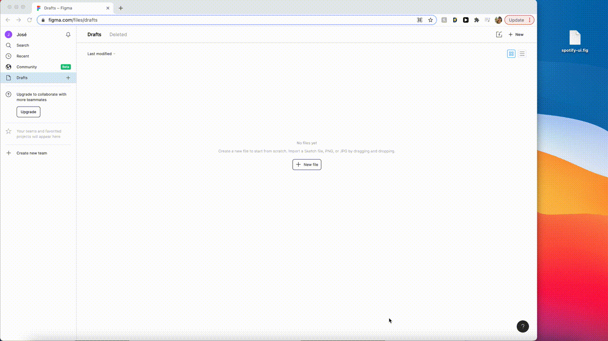
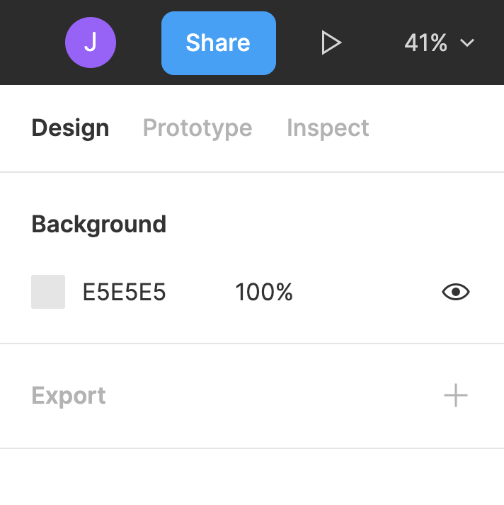
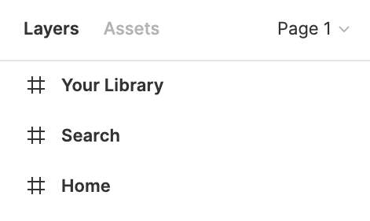
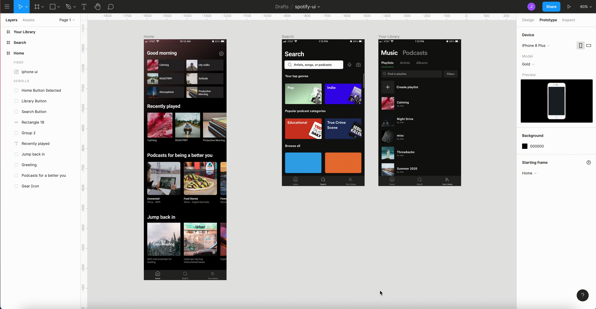
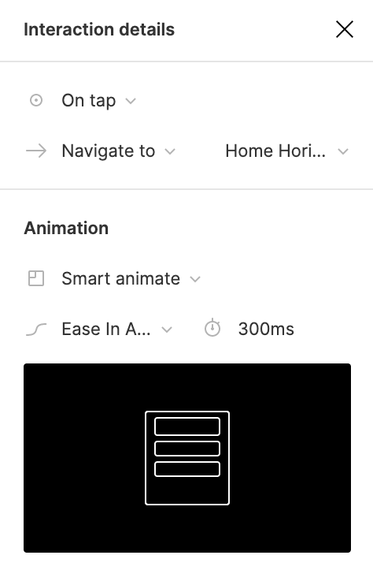
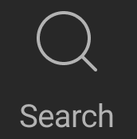
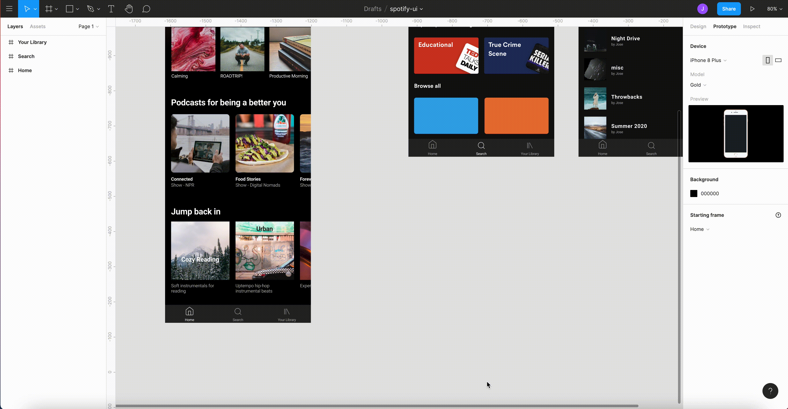
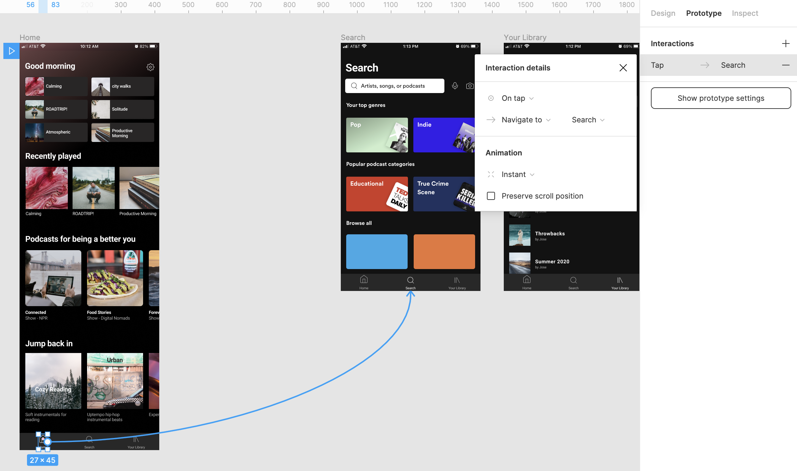
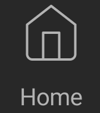
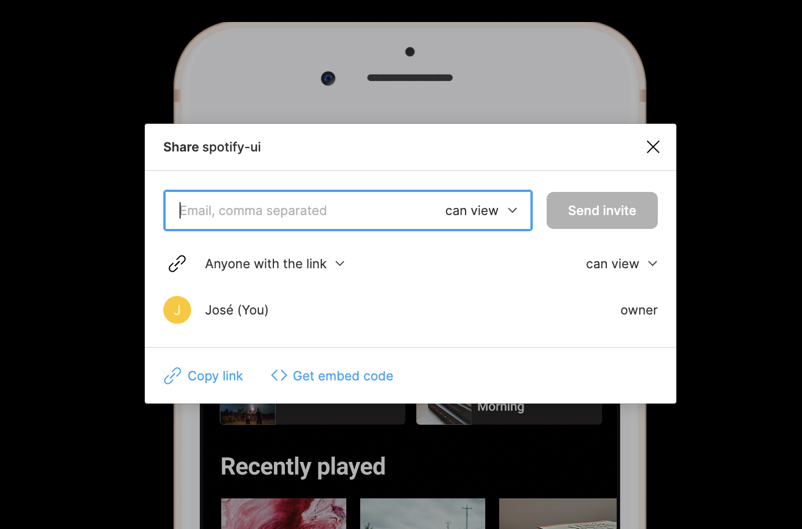

What is Figma?
Figma is a free, web-based design software that’s used by many industry professionals.
What can I do on Figma?
- Create UI designs and components
- Create design systems
- Create and share interactive prototypes
- Work simultaneously in teams
Before you start
- Sign in to Figma.com or create an account
- Download Sample File (Google Drive, 9.4 MB)
You are ready to start.
Importing files
- Drag and drop downloaded Figma file (spotify-ui.fig) into Drafts 
- Open spotify-ui draft
You have successfully imported the sample Figma file.
Connecting frames
- Switch to prototype mode by clicking on the Prototype tab in the properties panel to the right 
- Select the Home frame under the Layers panel to the left 
- Hover to the Prototype panel and set the Overflow behavior to no scrolling
- Select the node on the right side of the Home frame and drag it to the Search frame 
- Adjust interaction effects using the Interaction details window that appears after connecting a frame 
- Connect the Search frame back to the Home frame by repeating steps 4 and 5
- Test your prototype by clicking on the ‘play’ button on the top right of the control panel
You have successfully connected two frames.
Connecting frame with objects
- Make sure you’re on prototype mode and Overflow behavior is set to no scrolling
- Select the ‘search icon’  on the bottom of the Home frame
- Select the node on the right and drag to Search frame 
- Set the interaction effect to on tap to create a user touch effect 
-
Select the ‘home icon’  on the bottom of the Search frame and drag left node back to Home frame
Try doing the same for the Your Library frame
- Test your prototype by clicking on the ‘play’ button on the top right of the control panel
You have successfully connected two frames using objects.
Share your prototype
- After completing your frame connections and interactions click the ‘play’ button on the top right of the control panel
- Select the Share prototype button in blue to send email invites or to a copy shareable link 
You have shared your prototype.